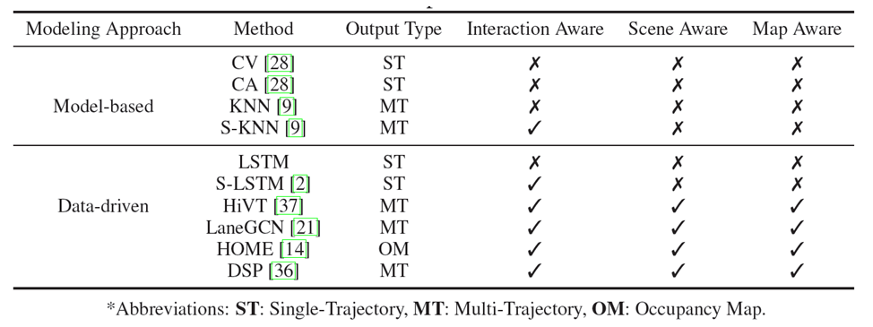
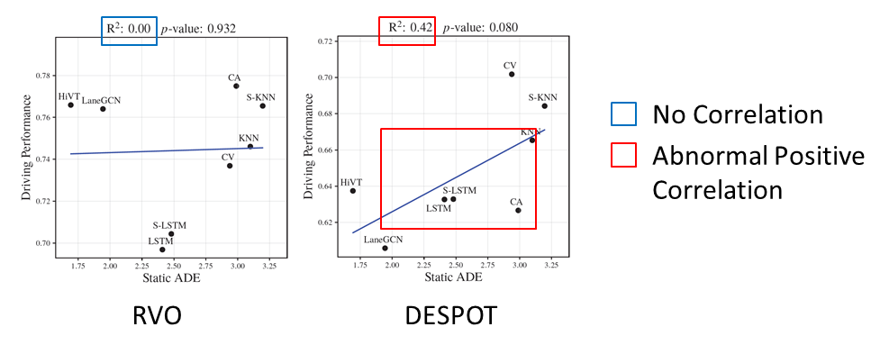

TL;DR
We emprically prove that motion prediction does not correlate to driving performance. It is due to 2 factors: the dynamics gap and the computational efficiency.
In the autonomous driving system, trajectory prediction plays a vital role in ensuring safety and facilitating smooth navigation. However, we observe a substantial discrepancy between the accuracy of predictors on fixed datasets and their driving performance when used in downstream tasks. This discrepancy arises from two overlooked factors in the current evaluation protocols of trajectory prediction: 1) the dynamics gap between the dataset and real driving scenario; and 2) the computational efficiency of predictors. In real-world scenarios, prediction algorithms influence the behavior of autonomous vehicles, which, in turn, alter the behaviors of other agents on the road. This interaction results in predictor-specific dynamics that directly impact prediction results. As other agents' responses are predetermined on datasets, a significant dynamics gap arises between evaluations conducted on fixed datasets and actual driving scenarios. Furthermore, focusing solely on accuracy fails to address the demand for computational efficiency, which is critical for the real-time response required by the autonomous driving system. Therefore, in this paper, we demonstrate that an interactive, task-driven evaluation approach for trajectory prediction is crucial to reflect its efficacy for autonomous driving.
We emprically prove that motion prediction does not correlate to driving performance. It is due to 2 factors: the dynamics gap and the computational efficiency.
We use 10 motion predictors, encompassing both model-based and data-driven approaches. The following table shows 10 methods (please refer to the paper for citation):
We use 2 planners to plan the self-driving cars. The first planner is based on Reciprocal Velocity Obstacles (RVO) which optimizes the output action in velocity space for collision avoidance. The second planner is DESPOT which utilizes POMDP for decision making under uncertainty.

We use SUMMIT as our simulator. We diversify the maps including highways, intersections, roundabouts so we can test the robustness of each planner in varied environments.
The driving performance is primarily determined by three factors: safety, comfort and efficiency. We standardize the direction of these metrics, with higher values indicating better performance

As seen from below diagram, there exists no correlation between ADE and driving performance for both RVO and DESPOT. Also there is an abnormal positive correlation for DESPOT which lack a realistic basis. This observation affirms the drawback of static evaluation using ADE or FDE.
We observe that the discrepancy is due to the dynamics gap: in offline evaluation, the vehicle responses are predetermined while in real-world, its behavior is changed according to other vehicles which are influenced by their predictor model. To minimize this gap, we propose the use of an interactive simulation environment to evaluate the predictor for downstream decision-making.

As seen from below diagram, the Dynamic ADE now correlates with driving performance: the lower of Dynamic ADE, the higher (better) driving performance.

@article{TranWu2023whatmatters,
author = {Phong Tran, Haoran Wu Cunjun Yu, Panpan Cai, Sifa Zheng, David Hsu},
title = {What Truly Matters in Trajectory Prediction for Autonomous Driving?},
journal = {NeurIPS},
year = {2023},
}